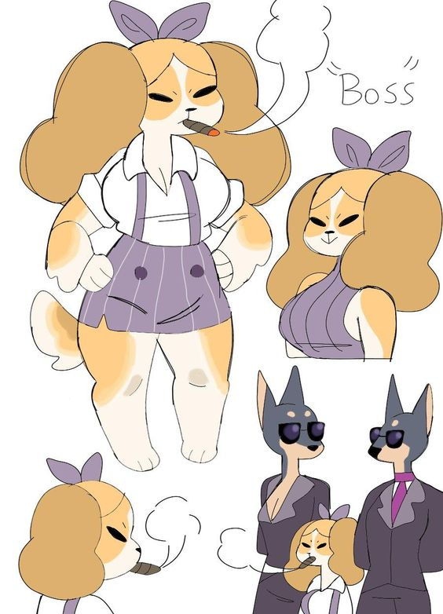
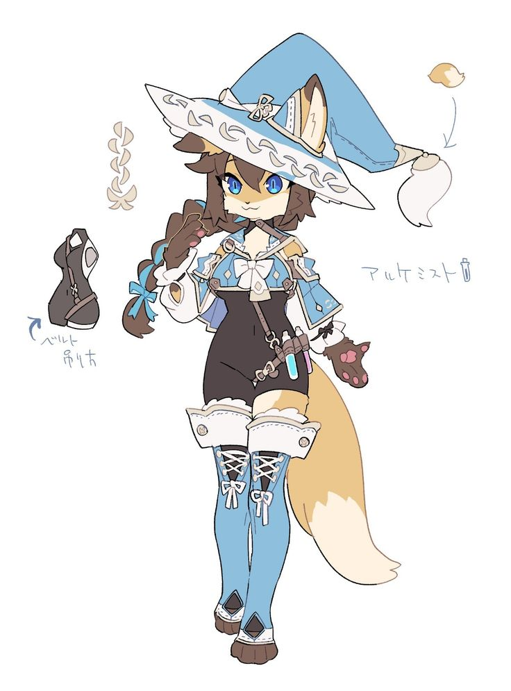
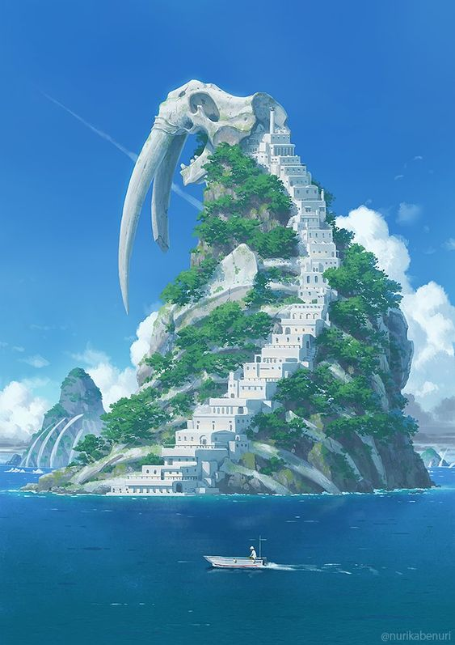
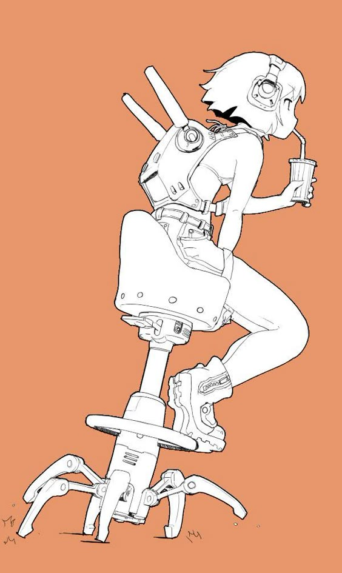
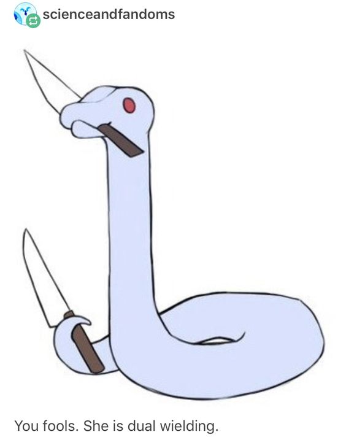

1 - Usado na animação low poly das duas raposas lutando contra um titã vela.
2 - Utilizei na arte da Centaura Corgi bebendo café.
3 - Lutadora Marcial vermelha
4 - Quero utilizar ela em uma animação aonde ela está escondida nas sombras de uma safe, a animação inicia com um guarda entrando na safe para checar a segurança do tesouro, quando o guarda vira as costas para o tesouro ela agarra o tesouro com sua lingua e puxa de volta para sua boca, provavelmente seria um diamante largo, então ficaria comico mudar o formato da cabeça dela indicando que é demais para ela carregar na boca. O Guarda logo vira e nota o diamante sumido !
5 - Simplesmente gostaria de utilizar como base para o design de um chefe em um jogo, a ideia de um personagem baixo sendo um chefão sempre acaba criando situações interessantes para design.

6 - Especificamente quero usar a cauda desse personagem como referência, uma cauda mecânica separada por partes ficaria interessante em um personagem ciborgue meio animal.
7 - Imagino que da pra utilizar como twist em uma animação de combate, a pessoa é desarmada, mas ahá ! Ela tira o cinto e revela uma espada.
8 - Um problema que eu tenho com design de bruxas é que geralmente elas tem esses vestidos longos e ''bulkys'', logo a ideia de uma bruxa mais estéticamente ágil, como uma ladina, seria bem legal de se modelar !

1 - Usado como base para as raposas combatentes que aparecem nas minhas animações.
2 - Lutador azul com Minigun
3 - Exército de Bonecas usando diversas Armas
4 - Essa imagem foi o que eu utilizei em uma mesa de RPG DND 5e como druida shepherd, ela era muito forte e divertida de se jogar, logo gostaria de personalizar ela como modelo 3d para futuro uso.
5 - Simplesmente a estética de uma criatura gigante tendo seu esqueleto usado como ilha é incrivel, não tem como não se sentir inspirado por essa ideia !

6 - Um modelo robótico e complexo é algo que eu quero eventualmente tentar, e não machuca ser um robo mais 'Bottom-heavy'.
7 - Achei a mascara muito interessante, principalmente para um personagem misterioso e temático ao redor de coelhos.
8 - Ia utilizar mas a ideia acabou não indo bem, ainda vou ver se essa imagem continua aqui.
1 - Fiz uma fanart da Fenneko usando essa arte como base, não a pose é claro. Só o design e as cores.
2 - Lutador azul com Minigun
3 - Lutadora vermelha marcial
4 - Utilizei essa imagem como personagem de T20, especificamente uma canhoneira que conseguia atirar um ataque pesadão a 1km de distância.
Já que jogava em um servidor de rpg não foi muito longo a experiência, mas a diversão de jogar com esse personagem me faz querer utilizar de novo, dessa vez com 1 modelo !
5 - A Parte que gostaria de utilizar é simplesmente a da cadeira, esse móvel meio mecânico e aranha seria legal de se colocar em um personagem que se pensa importante demais para andar.

6 - O Design em sí dessa imagem não é tão bom, mas os chifres são fantásticos! Gostaria de utilizar especificamente essa parte de chifres holográficos em algum design futuro.
7 - Esse corset simplesmente grita 'Nobre esnobe de Florete' não grita? Por isso que quero utilizar isso nesse exato tipo de personagem, segurando a espada apontada para cima mas logo a frente de seu rosto.
8 - A Ideia da imagem é a parte que amei, uma pessoa que é fisicamente deficiente, mas o amor do seu passado prevalece, lhe fortificando e deixando-o continuar lutar !
9 - Uma personagem de pele derretida é uma estética que eu quero eventualmente tentar, logo uma slime feita de wax seria interessante de fazer.
1 - Utilizei na arte da Centaura Corgi bebendo café.
2 - Lutador azul com Minigun
3 - Um modelo relativamente simples que vai ser utilizado para praticar animação com multiplos braços em combate.
4 - Ulti, mais conhecida como Wulti, o que mais dizer? Eu tenho que fazer uma fanart dela!
5 - A Ideia seria um futebol fantasioso, e essa seria a pessoa que fica no campo para marcar falta (Não eu não esqueci o nome ç.ç (Não eu não vou pesquisar)), si bem que usaria shorts ao invéz de só calcinha.
6 - Não a baleia em sí, mas a ideia que essa arte tráz. Um animal fantasma com apenas seu esqueleto cruzando o céu é definitivamente uma adição que gostaria de ter em um background ou como foco.
7 - Um Chefe estilo dark souls ou monster hunter, uma cobra enorme segurando duas espadas, isso sim é um design que eu quero ver em um jogo, e é algo que planejo utilizar para meus jogos futuros !

8 - Quero fazer esse gif em 3D.
1 - Utilizei na arte da Centaura Corgi bebendo café..
2 - Exército de Bonecas usando diversas Armas
3 - Essa imagem foi um dos primeiros modelos que experimentei fazer no blender, agora que estou usando blockbench quero tentar novamente, para ver o quanto consegui melhorar em modelagem.
4 - Sou um grande fã de LWA, então utilizo essa imagem como área de trabalho no meu computador pessoal, seria melhor ainda se eu refizer ela por completo!
5 - Um bom tempo atráz eu tentei fazer uma visual novel utilizando cerberus como personagens principais, eram diferentes desse, mas vou botar em prática as habilidades e tentar criar novamente os designs que tinha antigamente.
6 - Esse tipo de texturização é algo que aspiro a fazer, também já que tenho um jogo de pesca sendo feito, seria bom ter um barco.
7 - Gostaria de fazer uma fanart da Rebecca de Edgerunners.
8 - Refazer esse meme seria daora kk.

.jpg)
.jpg)
.jpg)
.jpg)
.jpg)
.jpg)
.jpg)
.jpg)
.jpg)
.jpg)
.jpg)
.jpg)

.jpg)
.jpg)
.jpg)
.jpg)
.jpg)
.jpg)
.jpg)
.jpg)

.jpg)
.jpg)
.jpg)
.jpg)
.jpg)
.gif)
.jpg)
.jpg)
.jpg)
.jpg)
.jpg)
.gif)
.jpg)
.jpg)